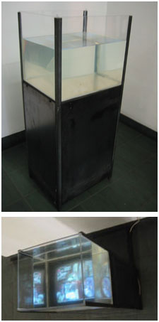

Fountain

HC11 microcontroller,
PC, CRT, speakers,
steel, plexiglass, water,
electric pump
Fountain monitors and scrapes search queries entered into the Google search engine in real-time. Using the image search function it retreives images related to each search term and displayed it as a collage on a CRT mounted under a plexiglass tank filled with water. Every time a new image appears, a pump is actuated creating the appearance of images floating in water. Visitors have to look into the tank in order to see the screen. Gallery visitors are able to hear each term spoken using text to speech.
- Chairman’s grant
- Alumni award
- Computer Art thesis grant
- Award for best interactive media thesis